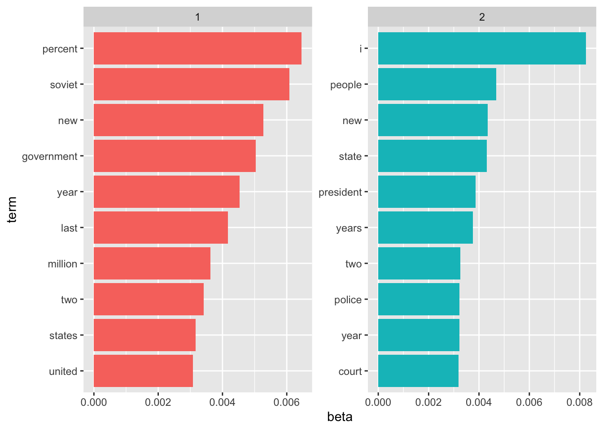
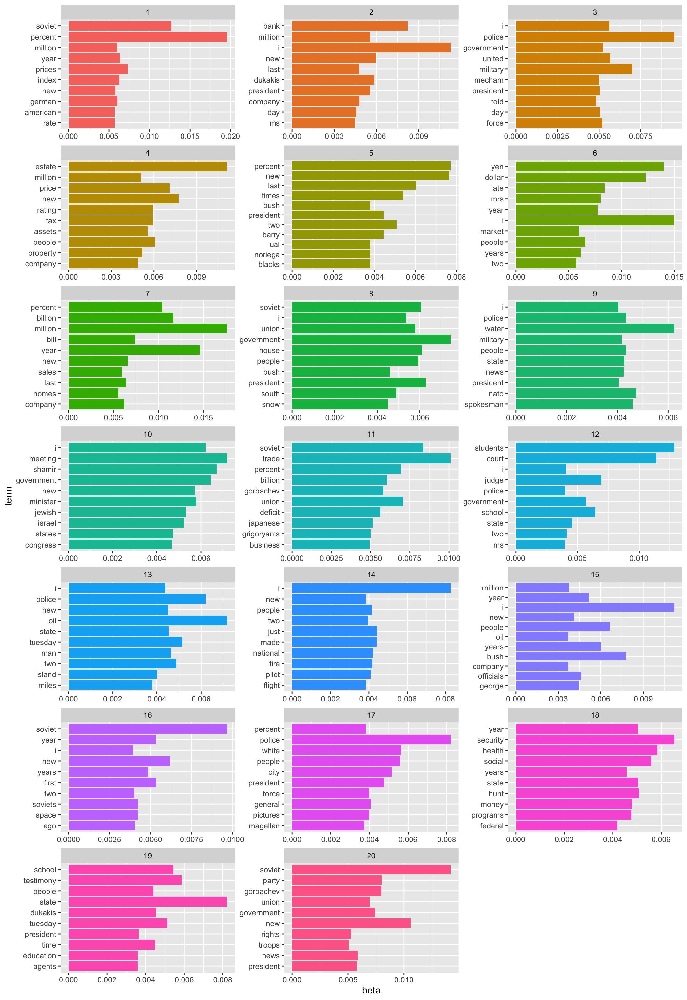

4.1 AssociatedPress Dataset
library(tidyverse)
library(tidytext)
library(tm)
library(topicmodels)
library(topicdoc)
library(stringr)
library(wordcloud)
library(RColorBrewer)data("AssociatedPress", package = "topicmodels")4.1.1 Document-Term-Matrix
AssociatedPress<<DocumentTermMatrix (documents: 2246, terms: 10473)>>
Non-/sparse entries: 302031/23220327
Sparsity : 99%
Maximal term length: 18
Weighting : term frequency (tf)The data set is an object of class “DocumentTermMatrix” provided by package tm. It is a document-term matrix which contains the term frequency of 10473 terms in 2246 documents.
terms <- Terms(AssociatedPress)summary(terms) Length Class Mode
10473 character character head(terms)[1] "aaron" "abandon" "abandoned" "abandoning" "abbott" "abboud" ap_td <- tidy(AssociatedPress)
ap_td# A tibble: 302,031 x 3
document term count
<int> <chr> <dbl>
1 1 adding 1
2 1 adult 2
3 1 ago 1
4 1 alcohol 1
5 1 allegedly 1
6 1 allen 1
7 1 apparently 2
8 1 appeared 1
9 1 arrested 1
10 1 assault 1
# … with 302,021 more rows4.1.2 Split data for training & test
# Select first 500 articles
full_data <- AssociatedPress[1:500, ]# create train and test sets
n <- nrow(full_data)
splitter <- sample(1:n, round(n * 0.8))
train_set <- full_data[splitter, ]
test_set <- full_data[-splitter, ]4.1.3 Train models for different k
# fit models with different k
n_topics <- c(2, 4, 10, 20, 50, 100)
ap_lda_models <- n_topics %>%
map(LDA, x = train_set, control = list(seed = 42))# Select model with k = 2
ap_lda_models[[1]]A LDA_VEM topic model with 2 topics.4.1.4 Word-topic-probabilities for k = 2
# Word-Topic-probabilities
ap_topics <- tidy(ap_lda_models[[1]], matrix = "beta")
ap_topics# A tibble: 20,946 x 3
topic term beta
<int> <chr> <dbl>
1 1 aaron 5.19e- 5
2 2 aaron 2.65e- 5
3 1 abandon 2.60e- 5
4 2 abandon 5.94e-14
5 1 abandoned 8.33e- 5
6 2 abandoned 2.07e- 4
7 1 abandoning 3.72e-44
8 2 abandoning 3.72e-44
9 1 abbott 1.92e-17
10 2 abbott 7.96e- 5
# … with 20,936 more rows4.1.5 Top Words in Topics
ap_top_terms <- ap_topics %>%
group_by(topic) %>%
slice_max(beta, n = 10) %>%
ungroup() %>%
arrange(topic, -beta)
ap_top_terms %>%
mutate(term = reorder_within(term, beta, topic)) %>%
ggplot(aes(beta, term, fill = factor(topic))) +
geom_col(show.legend = FALSE) +
facet_wrap(~ topic, scales = "free") +
scale_y_reordered() ### Document-topic probabilities
ap_documents <- tidy(ap_lda_models[[1]], matrix = "gamma")
ap_documents# A tibble: 800 x 3
document topic gamma
<int> <int> <dbl>
1 1 1 0.727
2 2 1 0.000647
3 3 1 0.000480
4 4 1 0.00182
5 5 1 1.00
6 6 1 1.00
7 7 1 0.000699
8 8 1 0.00102
9 9 1 0.453
10 10 1 0.999
# … with 790 more rows4.1.6 Top 5 words in each topic
ap_lda_td <- tidy(ap_lda_models[[1]])top_terms <- ap_lda_td %>%
group_by(topic) %>%
top_n(5, beta) %>%
ungroup() %>%
arrange(topic, -beta)
top_terms# A tibble: 10 x 3
topic term beta
<int> <chr> <dbl>
1 1 percent 0.00646
2 1 soviet 0.00608
3 1 new 0.00527
4 1 government 0.00503
5 1 year 0.00453
6 2 i 0.00825
7 2 people 0.00469
8 2 new 0.00435
9 2 state 0.00431
10 2 president 0.003874.1.7 Word-topic-probabilities for k = 20
# Word-Topic-probabilities
ap_topics_20 <- tidy(ap_lda_models[[4]], matrix = "beta")
ap_topics_20# A tibble: 209,460 x 3
topic term beta
<int> <chr> <dbl>
1 1 aaron 5.77e-192
2 2 aaron 1.83e-121
3 3 aaron 9.53e-192
4 4 aaron 6.00e-157
5 5 aaron 3.07e-191
6 6 aaron 3.73e-157
7 7 aaron 1.22e-191
8 8 aaron 1.49e-191
9 9 aaron 1.17e-191
10 10 aaron 8.71e-192
# … with 209,450 more rows4.1.8 Top Words in Topics
ap_top_terms <- ap_topics_20 %>%
group_by(topic) %>%
slice_max(beta, n = 10) %>%
ungroup() %>%
arrange(topic, -beta)ap_top_terms %>%
mutate(term = reorder(term, beta)) %>%
ggplot(aes(term, beta, fill = factor(topic))) +
geom_bar(stat = "identity", show.legend = FALSE) +
facet_wrap(~ topic, scales = "free", ncol = 3) +
coord_flip()
4.1.9 How well does the model predict? - Evaluate with Perplexity
data_frame(k = n_topics,
perplex = map_dbl(ap_lda_models, perplexity)) %>%
ggplot(aes(k, perplex)) +
geom_point() +
geom_line() +
labs(title = "Evaluating LDA topic models on training set",
subtitle = "Optimal number of topics (smaller is better)",
x = "Number of topics",
y = "Perplexity")
4.1.9.1 k = 2
print("Test set - Model 1")[1] "Test set - Model 1"perplexity(ap_lda_models[[1]], newdata = test_set)[1] 10885.764.1.9.2 k = 4
print("Test set - Model 2")[1] "Test set - Model 2"perplexity(ap_lda_models[[2]], newdata = test_set)[1] 9301.5224.1.9.3 k = 10
print("Training set - Model 3")[1] "Training set - Model 3"perplexity(ap_lda_models[[3]], newdata = train_set)[1] 5021.805print("Test set - Model 3")[1] "Test set - Model 3"perplexity(ap_lda_models[[3]], newdata = test_set)[1] 7240.5544.1.9.4 k = 20
print("Test set - Model 4")[1] "Test set - Model 4"perplexity(ap_lda_models[[4]], newdata = test_set)[1] 5619.0114.1.9.5 k = 50
print("Test set - Model 5")[1] "Test set - Model 5"perplexity(ap_lda_models[[5]], newdata = test_set)[1] 3601.6344.1.9.6 k = 100
print("Test set - Model 6")[1] "Test set - Model 6"perplexity(ap_lda_models[[6]], newdata = test_set)[1] 2558.488